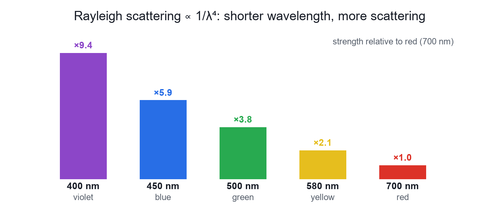

Physics
Why the Sky is Blue and Sunsets are Red
Video not playing? Watch on Instagram · YouTube
Air scatters blue light far more than red. Blue fills the sky by day; at sunset the long path through the air removes the blue, and red and orange reach you.
Download the short notesPDF, 91 KB · solved examples, practice set and answer key That's all the videos in this chapter so far Back to Light and colour
Key points
- Rayleigh scattering ∝ 1/λ⁴: shorter wavelength, more scattering.
- Blue (≈450 nm) scatters about 5–6 times more than red (≈700 nm).
- Sunset: light crosses much more air, so the blue is scattered out on the way.
- No atmosphere (the Moon): a black sky.
Scattering and wavelength

| Term | Meaning |
|---|---|
| White light | A mixture of all colours (VIBGYOR). |
| Wavelength | Red is long (≈700 nm); blue is short (≈450 nm); violet is shortest (≈400 nm). |
| Rayleigh scattering | Scattering by particles much smaller than the wavelength, such as air molecules; strength ∝ 1/λ⁴. |
Step by step
- Sunlight is white: it contains every colour.
- Air molecules scatter short-wavelength blue far more than red.
- Scattered blue reaches your eyes from every direction, so the whole sky looks blue.
- Why not violet? Sunlight has less violet, some is absorbed high up, and our eyes are less sensitive to it.
- At sunset the light crosses a much thicker layer of air; most blue is scattered out, so red and orange reach you.
Related facts
- Clouds are white: water droplets are much bigger than the wavelength and scatter all colours almost equally.
- Danger signals are red: red is scattered least by fog and smoke, so it travels farthest.
- The sky is blue over deserts too, so it is not a reflection of the ocean.
Try it yourself
Goal: See how the Sun's height changes the air the light crosses, and with it the colour of the Sun and the sky.
- Drag the Sun-height slider from high to the horizon.
- Watch the Sun and sky colours and the blue and red percentages that reach you.
- Tick 'No atmosphere' to see the Moon's black sky.
Quick quiz
5 questions. Choose an answer for each, then submit to see your score and the explanations.